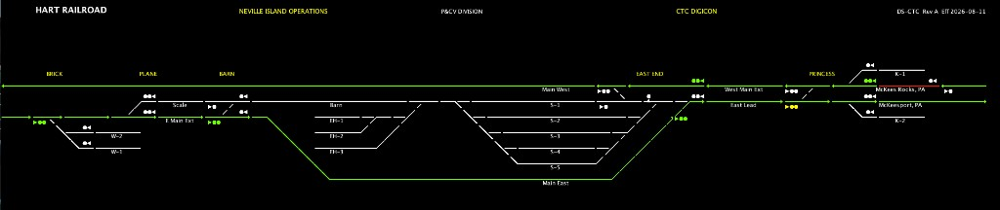

Two signal systems
Each signal head is a searchlight with a red, yellow and green LED, wired to three outputs on the nearest LCOS radio node (LCOS and the Arduino bridge). The node can run the head by itself, from its own logic. JMRI, on the computer, can also run it, from Signal Mast Logic built out of the track plan. Only one of them drives a head at a time. The node's logic works with no computer running. JMRI's covers the whole railroad, and the dispatcher's panels work through it.
Today one head is in the field: Mast 6LB at Switch 5, device 432. Every other mast exists in JMRI and on the panels, with internal heads that send nothing to the layout. The rest are wired control point by control point.
LCOS signals on the nodes
LCOS has a Signal Manager on each node. Each head is one object with a Stop, Approach and Clear output, set up with one rule: Clear when the switch it governs is lined for its route (Main for a head on the straight route, Diverged for one on the diverging route), otherwise Stop. An occupied block in front of it forces Stop. The rule uses only the switch and detectors the node can see.
A head has two states in LCOS. Unheld, it follows the Signal Manager rule. Held, it shows whatever color it was last sent and ignores the rule until it is released. JMRI uses Held to take over a head, and releasing it hands the head back.
JMRI signals
In JMRI every signal is a stock signal mast on the Basic signal system. A home signal with two heads (two searchlights, one above the other) shows Clear (green over red), Approach (yellow over red), Diverging Clear (red over green), Diverging Approach (red over yellow) and Stop (red over red). A one-head mast or dwarf shows Clear, Approach and Stop. JMRI picks the aspect from the track ahead: Stop when the block is occupied or a switch is against the train, Approach when the next signal is at Stop, Clear when the next signal is showing a proceed aspect.
There are 98 masts on the three levels. 69 are real signals that appear on the panels. The other 29 are hidden masts at buffer stops: a route that ends at a bumper needs a mast there for JMRI to have somewhere to end it.
Placed by prototype rules
No mast is placed by hand. A script reads the track plan and places each one by the rules a prototype signal engineer would use, and the same rules apply on every level:
- Home signals stand where a track from outside an interlocking meets one of its switches.
- Two heads where a route the mast governs reaches facing points inside the interlocking before the next signal, so the signal can show which way the train will go. Otherwise one head.
- High or dwarf. A searchlight on a mast faces trains on running track: the main route, a long track inside an interlocking, or a track joining two interlockings. A dwarf faces trains coming off a yard, lead or industry track.
- Long tracks inside an interlocking that can hold a train (over 150 cm) get signals at both ends. A track ending at a bumper gets a dwarf only if it can hold a train.
- No signal where it would lead nowhere. If every route from a switch leg ends at a bumper or on track with no signal, no home signal is placed there.
- Intermediate signals (automatic permissive block) come in pairs at a block boundary on running track where both blocks can hold a train. No signal stands in the helix; the home signals at its top and foot govern it.
The names follow the CTC machine's lever numbering. Switches have odd numbers and signals even ones, so the signals at Switch 5 are Mast 6LA and Mast 6LB. L is westbound and R eastbound, and A and B tell two masts on the same lever apart: Mast 6LB is the second westbound signal at Switch 5.
Intermediate signals are named from their milepost, in tenths, odd westbound and even eastbound, as prototype railroads number them. Mileposts start at MP 5.7 at staging Switch 1, where the P&OV met the P&LE at Neville interlocking, and count up through the helix and along each level. Main-level signals carry the line code A and upper-level ones B. The pair inside the Princess loop in staging is Mast 67 and 68; the main level has A83 and A84 on 107 Loop, and the upper level B92 and B93.
Discovering the routes
Signal Mast Logic is the list of routes from each mast to the next one it can reach, with the switches each route needs and the blocks it crosses. Nobody writes these. JMRI's Layout Editor has a Discover function that walks the drawn track from every mast to every mast it can reach in the direction it faces, and writes the logic itself. The masts are drawn at block boundaries on the Layout Editor panel, so the panel drawing is all Discover needs.
Discover runs on a copy of the JMRI setup, never on a host the layout uses, and its result goes into the generated tables file. Each run is compared with the last one's routes, so a changed route shows up before it is deployed. The current set is 69 source masts with 177 routes between them. JMRI also marks which masts are intermediate signals as it goes; the railroad takes its answer as it is and does not set it by hand.
The hand-off between LCOS and JMRI
A button in JMRI's main window, SML Enabled or SML Disabled, says who has the signals. JMRI takes them when it starts, unless another JMRI host already has them.
- Enabled. JMRI sends each head's color as a message (device 432 is
track/signalhead/432). The bridge passes it to the node by radio, and the node holds the head at that color. - Disabled. JMRI releases every head it holds. Each one goes back to its node's Signal Manager rule, and JMRI copies what the field reports onto its own heads, so the panels still show what the layout shows.
The bridge on the PC keeps a record of who has the signals, as a retained message both sides read. If JMRI disappears while it had them, the bridge asks for it. With no answer it releases every head itself: red for three seconds, then back to the node's rule, and records that nobody has the signals. A JMRI that is still running answers, and the bridge leaves the layout alone.
JMRI runs on the Raspberry Pi and on a Windows PC, and both can start at once. Each one that takes the signals posts a claim with its name and the time. When two claim together, the earlier claim wins and the other steps back, so the layout never has two JMRI hosts driving the same heads.
Dispatching on top
The dispatcher works from a CATS panel on screen, which sits on top of JMRI and uses its masts as they are. On the CTC desk every home signal is held at Stop until the dispatcher lines a route. Then CATS releases that signal and JMRI's logic picks the aspect. The ABS desk runs every signal as an automatic block signal, and with no desk open JMRI's logic runs them the same way.

More: LCOS and the Arduino bridge · Wiring viewer · Dispatcher guides · Digicon system overview (GitHub) · LCOS bridge (GitHub)